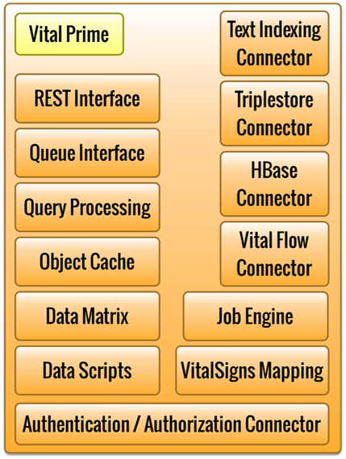

Vital Prime

The Vital Platform uses Vital Prime servers in the implementation.
Vital Prime provides in-memory data storage and analysis, interfaces to
data repositories, and access to data processing using Vital Flows or
Hadoop. Additionally, Vital Prime implements authentication /
authorization for application users.
Vital Prime is accessed via a REST interface. Event objects, such as
user "clicks", can be sent to Vital Prime via the Queue interface.
Event data sent via queue is typically sent into the Data Matrix, which
counts events by type and group.
Vital Prime processes queries using a connected data repository such as
a text index, a triplestore (NoSQL) database, or HBase.
Vital Prime provides a scripting interface. Such scripts are called
"DataScripts". DataScripts implement application data processing
functionality including defining data processing workflows ("Vital Flows"),
processing real-time data analytics in the Data Matrix, or accessing the
cache and connected data repositories. DataScripts can be run
periodically using the JobEngine. DataScripts can be called via the
application using the callFunction REST API call. Application
functionality is typically implemented via a DataScript, including
common features such as returning "top content", "recommended content",
or "trending content".